Grupo Bimbo Inventory Demand
Análise de dados + criação de um modelo de machine learning(XGboost) para previsão de demanda
Pablo Aguiar Raposo
15/04/2022
1 Introdução: Motivação, objetivo, carregamento dos dados e análise exploratória inicial
OBS: Este projeto é baseado em um competição do Kaggle. Os datasets estão presentes em https://www.kaggle.com/competitions/grupo-bimbo-inventory-demand/data. Todo o trabalho foi realizado em linguagem R e o relatório final foi obtido através do Rmarkdown.
1.1 Objetivo
Analisar os dados disponibilizados pelo Grupo Bimbo(México) e criar um modelo de machine learing usando o XGboost para previsão de demanda
1.2 Motivação
O Grupo Bimbo (https://www.grupobimbo.com) se esforça para atender a demanda diária dos consumidores por produtos frescos de panificação nas prateleiras de mais de 45.000 lojas em todo o México. Atualmente, os cálculos diários de estoque são realizados por funcionários de vendas de entregas diretas, que devem, sozinhos, prever a necessidade de estoque dos produtos e demanda com base em suas experiências pessoais em cada loja. Como alguns pães têm uma vida útil de uma semana, a margem aceitável para o erro é pequena. Assim, desenvolveremos um algooritmo capaz de prever essa demanda de forma automatizada.
1.3 Datasets utilizados:
train_sample5M: Amostra do conjunto com os dados históricos fornecidos. Usaremos uma amostra aleatória com 5 milhões de registros, por limitações de hardware, o que diminuirá a perfomance do modelo preditivo, porém não fará diferença para fins didáticos.
town_state.csv: Cidade e Estado (ligado ao atributo ‘Agencia_ID’)
producto_tabla.csv: Nome dos produtos (ligado ao atributo ‘Producto_ID’)
1.4 Carregando pacotes utilizados no projeto
library(data.table)
library(ggplot2)
library(dplyr)
library(corrplot)
library(randomForest)
library(mltools)
library(stringr)
library(xgboost)
library(caret)
library(knitr)set.seed(20)1.5 Carregando dados
data <- fread("train_sample5M.csv", header = T)
str(data)## Classes 'data.table' and 'data.frame': 5000000 obs. of 12 variables:
## $ V1 : int 1 2 3 4 5 6 7 8 9 10 ...
## $ Semana : int 4 6 5 4 8 8 9 4 5 7 ...
## $ Agencia_ID : int 1449 2019 1419 4010 1378 2016 3212 1315 1216 1437 ...
## $ Canal_ID : int 4 1 1 1 1 1 1 1 1 1 ...
## $ Ruta_SAK : int 4703 2108 2108 1187 1264 1167 1608 1163 2824 1206 ...
## $ Cliente_ID : int 2388554 2259230 1584082 675125 1701297 186427 2464819 2101619 4688752 1486927 ...
## $ Producto_ID : int 43064 31310 30549 43209 2425 41843 35144 1220 43316 43209 ...
## $ Venta_uni_hoy : int 2 1 4 7 20 5 2 2 1 2 ...
## $ Venta_hoy : num 18.54 6.25 21.52 47.32 90 ...
## $ Dev_uni_proxima : int 0 0 0 0 0 0 0 0 0 0 ...
## $ Dev_proxima : num 0 0 0 0 0 0 0 0 0 0 ...
## $ Demanda_uni_equil: int 2 1 4 7 20 5 2 2 1 2 ...
## - attr(*, ".internal.selfref")=<externalptr>kable(head(data))| V1 | Semana | Agencia_ID | Canal_ID | Ruta_SAK | Cliente_ID | Producto_ID | Venta_uni_hoy | Venta_hoy | Dev_uni_proxima | Dev_proxima | Demanda_uni_equil |
|---|---|---|---|---|---|---|---|---|---|---|---|
| 1 | 4 | 1449 | 4 | 4703 | 2388554 | 43064 | 2 | 18.54 | 0 | 0 | 2 |
| 2 | 6 | 2019 | 1 | 2108 | 2259230 | 31310 | 1 | 6.25 | 0 | 0 | 1 |
| 3 | 5 | 1419 | 1 | 2108 | 1584082 | 30549 | 4 | 21.52 | 0 | 0 | 4 |
| 4 | 4 | 4010 | 1 | 1187 | 675125 | 43209 | 7 | 47.32 | 0 | 0 | 7 |
| 5 | 8 | 1378 | 1 | 1264 | 1701297 | 2425 | 20 | 90.00 | 0 | 0 | 20 |
| 6 | 8 | 2016 | 1 | 1167 | 186427 | 41843 | 5 | 34.30 | 0 | 0 | 5 |
Verificando se temos valores NA
sum(is.na(data))## [1] 01.6 Dicionário de dados e análise exploratória inicial
1.6.1 ‘Demanda_uni_equil’: Variável target (o que iremos prever com nosso modelo)
Demanda ajustada (número inteiro) : venta_hoy - dev_uni_proxima
summary(data$Demanda_uni_equil)## Min. 1st Qu. Median Mean 3rd Qu. Max.
## 0.000 2.000 3.000 7.222 6.000 4936.0001.6.2 ‘Semana’: Número da semana(de 3 a 9)
table(data$Semana) #Quantidade de registros a cada dia da semana##
## 3 4 5 6 7 8 9
## 754207 740865 714316 687199 700390 700731 702292ggplot(data,aes(Semana,Demanda_uni_equil )) + geom_count() #Gráfico com a demanda por dia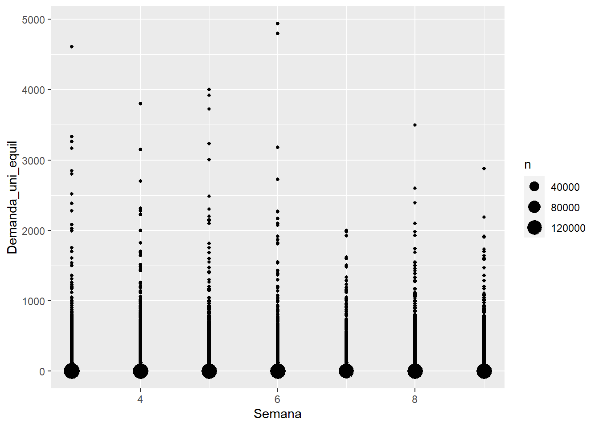
Podemos perceber que os dados estão bem distribuídos pela semana. Podemos usar posteriormente uma das semanas como dados de teste e o restante como dados de treino
1.6.3 ‘Agencia_ID’: ID do depósito de vendas
Quantidade de depósitos únicos:
length(unique(data$Agencia_ID))## [1] 5521.6.4 ‘Canal_ID’: ID do canal de vendas
table(data$Canal_ID)##
## 1 2 4 5 6 7 8 9 11
## 4546902 56282 251864 9723 18993 45176 4579 23 66458ggplot(data,aes(Canal_ID,Demanda_uni_equil )) + geom_count()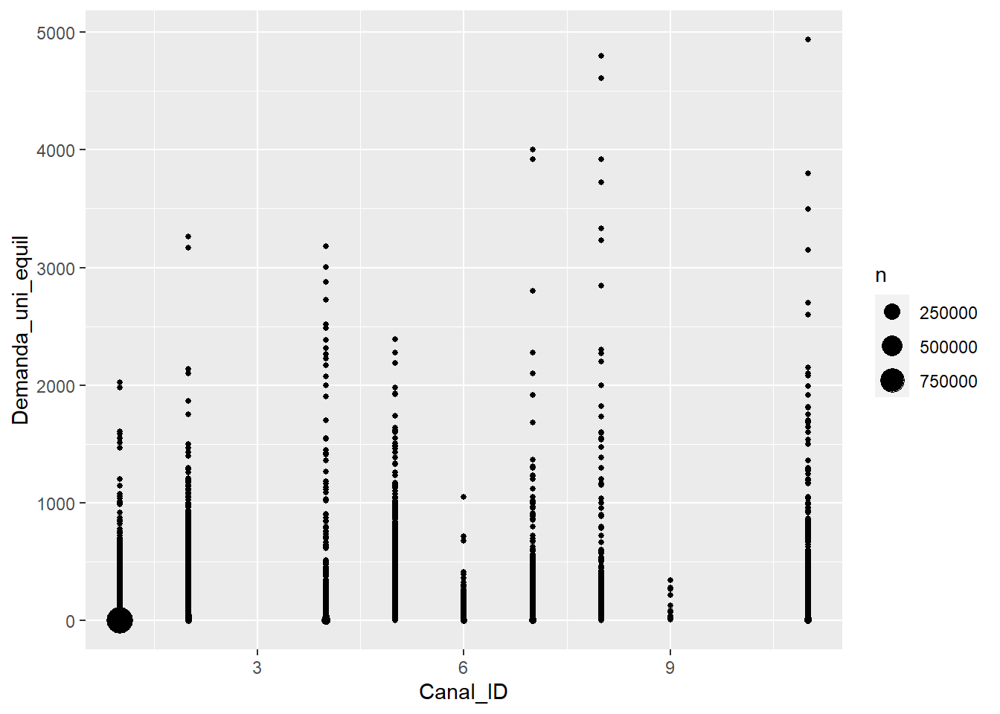
Podemos perceber que os IDs dos canais são: 1,2,4,5,6,7,8 e 11. O canal 1 tendo grande predominância na demanda
1.6.5 ‘Ruta_SAK’: ID de rota (Várias rotas = Depósito de Vendas)
length(unique(data$Ruta_SAK)) #quantidade de rotas## [1] 2697Rotas mais acessadas:
sort(table(data$Ruta_SAK),decreasing = T)[1:5]##
## 1201 1203 1202 1204 1205
## 30917 29526 28953 28274 277731.6.6 ‘Cliente_ID’: ID do cliente
Quantidade de clientes únicos:
length(unique(data$Cliente_ID))## [1] 7335521.6.7 ‘Producto_ID’: ID do produto
Quantidade de produtos únicos
length(unique(data$Producto_ID))## [1] 15211.6.8 ‘Venta_uni_hoy’: Unidades vendidas na semana (número inteiro)
summary(data$Venta_uni_hoy)## Min. 1st Qu. Median Mean 3rd Qu. Max.
## 0.000 2.000 3.000 7.307 7.000 4936.000boxplot(data$Venta_uni_hoy)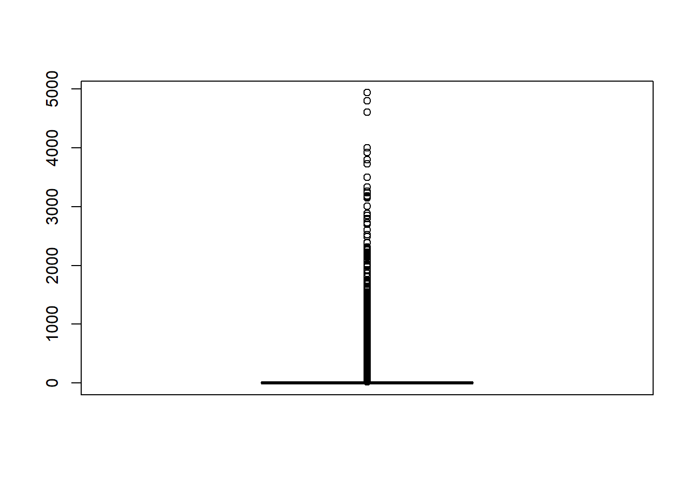
Parece haver bastante outliers. Trataremos disso depois
ggplot(data,aes(Venta_uni_hoy,Demanda_uni_equil )) + geom_count(aes(color = ..n..))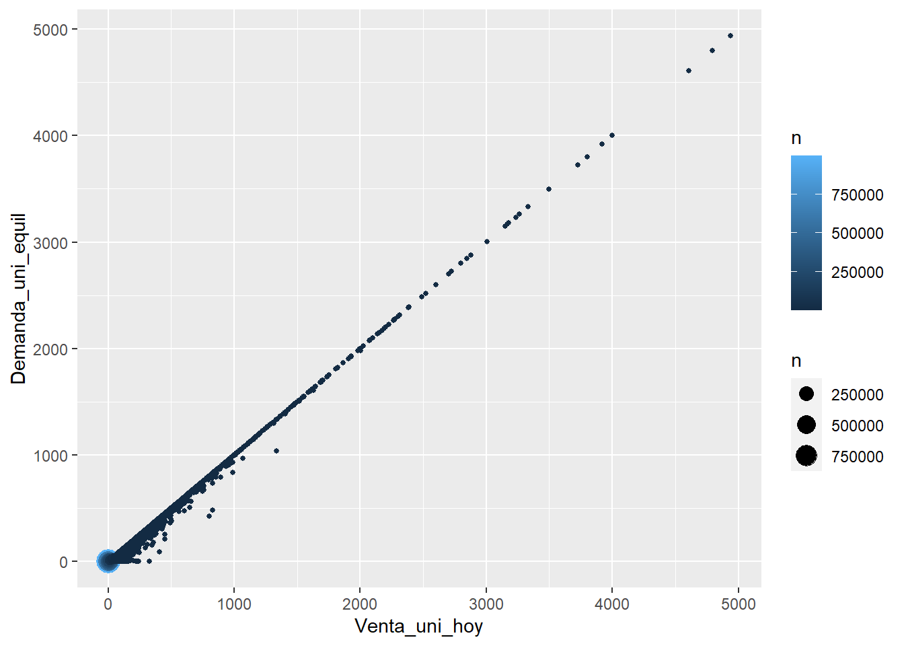
Como esperado, grande relação com a variável target.
1.6.9 ‘Venta_hoy’: vendas nesta semana (undade: pesos)
summary(data$Venta_hoy)## Min. 1st Qu. Median Mean 3rd Qu. Max.
## 0.00 16.76 30.00 68.55 56.10 303851.52ggplot(data,aes(Venta_hoy,Demanda_uni_equil )) + geom_count(aes(color = ..n..))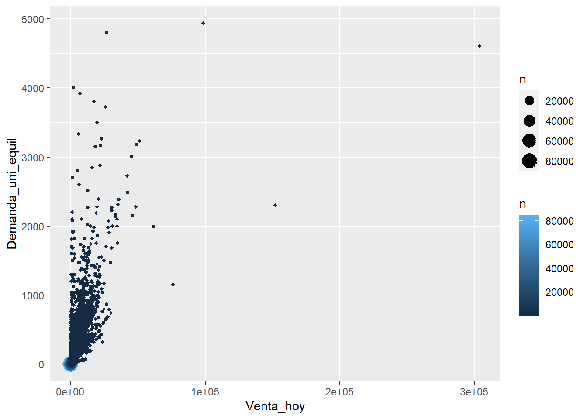
Quanto maior o valor da venda, mais disperso da variável target
1.6.10 ‘Dev_uni_proxima’: Unidades devolvidas na semana seguinte (número inteiro)
summary(data$Dev_uni_proxima)## Min. 1st Qu. Median Mean 3rd Qu. Max.
## 0.0000 0.0000 0.0000 0.1252 0.0000 1708.0000ggplot(data,aes(Dev_uni_proxima,Demanda_uni_equil )) + geom_count()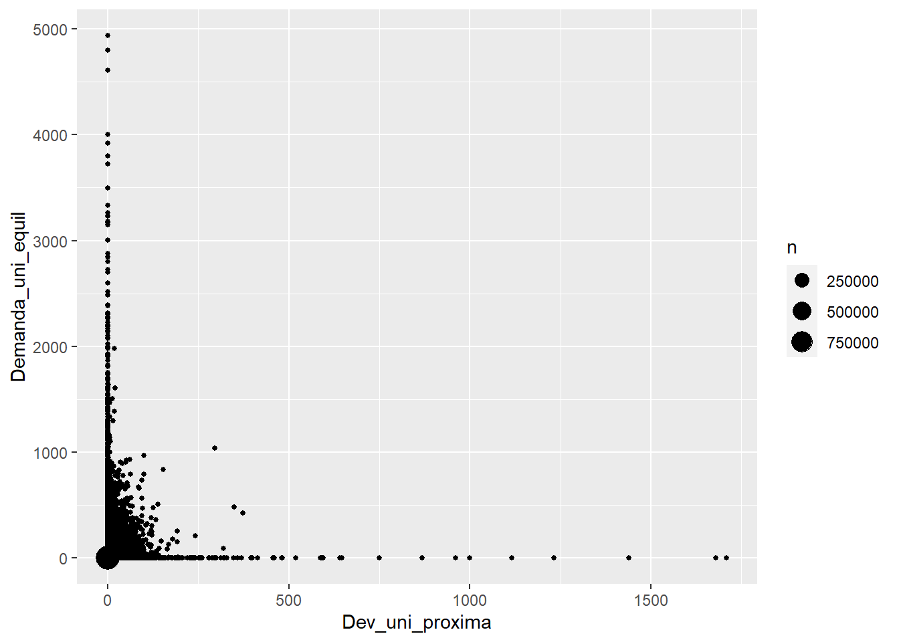
1.6.11 ‘Dev_proxima’: quantidade devolvida na semana seguinte (unidade: pesos)
summary(data$Dev_proxima)## Min. 1st Qu. Median Mean 3rd Qu. Max.
## 0.00 0.00 0.00 1.24 0.00 40093.20ggplot(data,aes(Venta_hoy,Demanda_uni_equil )) + geom_count(aes(color = ..n..))2 Data munging: Adicionando Novas variávies ao dataset e fazedo modificações
2.1 Excluindo a coluna V1
data$V1 = NULL2.2 Adicionando dados dos locais de vendas com o arquivo “town_state.csv”
state <- read.csv("town_state.csv", header = T,encoding = "UTF-8")
kable(head(state))| Agencia_ID | Town | State |
|---|---|---|
| 1110 | 2008 AG. LAGO FILT | MÉXICO, D.F. |
| 1111 | 2002 AG. AZCAPOTZALCO | MÉXICO, D.F. |
| 1112 | 2004 AG. CUAUTITLAN | ESTADO DE MÉXICO |
| 1113 | 2008 AG. LAGO FILT | MÉXICO, D.F. |
| 1114 | 2029 AG.IZTAPALAPA 2 | MÉXICO, D.F. |
| 1116 | 2011 AG. SAN ANTONIO | MÉXICO, D.F. |
data <-inner_join(data, state, by="Agencia_ID")2.3 Dividindo a coluna ‘Town’ em ‘Town_ID’ e ‘Town_name’
data$Town_ID <- sapply(strsplit(data$Town, " "), function(x) x[[1]])
data$Town_ID <- as.integer(data$Town_ID)
data$Town_name <- gsub("\\d+","",data$Town)
data$Town = NULL
kable(head(data[,c('Town_name','State')]))| Town_name | State |
|---|---|
| PIEDRAS NEGRAS | COAHUILA |
| IGUALA | GUERRERO |
| LINCOLN | NUEVO LEÓN |
| AEROPUERTO | NUEVO LEÓN |
| SANTIAGO IXCUINTLA | NAYARIT |
| CUAUTLA | MORELOS |
2.4 Criando coluna ‘State_encoded’
Utilizarei label encoder para transformar strings em números. Isso será útil no nosso modelo de machine learning
data$State_encoded <-factor(data$State)
data$State_encoded <-as.integer(data$State_encoded)
kable(head(data[,c('State','State_encoded')]))| State | State_encoded |
|---|---|
| COAHUILA | 7 |
| GUERRERO | 12 |
| NUEVO LEÓN | 19 |
| NUEVO LEÓN | 19 |
| NAYARIT | 18 |
| MORELOS | 17 |
2.5 Adicionando informações do produto com o arquivo “producto_tabla.csv”
product <- read.csv("producto_tabla.csv", header = T, encoding = "UTF-8")
data <-inner_join(data, product, by="Producto_ID")
str(data$NombreProducto)## chr [1:5000000] "Submarinos Fresa 3p 105g SP MTA MLA 43064" ...kable(as.data.frame(head(data$NombreProducto)))| head(data$NombreProducto) |
|---|
| Submarinos Fresa 3p 105g SP MTA MLA 43064 |
| Canelitas 90g MTB MLA 31310 |
| Suavicremas Chocolate 84g MTA MLA 30549 |
| Bimbunuelos 4p 66g MTA BIM 43209 |
| Nito 1p 62g Central BIM 2425 |
| Leche Nito 236ml BIM 41843 |
Da coluna ‘NombreProducto’ vamos separar as informações do peso e da quantidade de pedaços.
2.6 Criando coluna Weight (peso do produto)
data$Weight <- regmatches(data$NombreProducto, regexec("\\d+g", data$NombreProducto))
data$Weight <- unlist({data$Weight[sapply(data$Weight, length)==0] <- NA; data$Weight})
data$Weight <- as.numeric(strsplit(as.character(data$Weight), "\\D"))2.7 Tratando de valores NA - substituindo pela mediana
Usarei a mediana, e não a média, para evitar a interferência de outliers
median(data$Weight, na.rm = T)## [1] 120data$Weight <- ifelse(is.na(data$Weight), median(data$Weight, na.rm = T),
data$Weight)
kable(as.data.frame(head(data$Weight)))| head(data$Weight) |
|---|
| 105 |
| 90 |
| 84 |
| 66 |
| 62 |
| 120 |
2.8 Adicionando coluna ‘Pieces’(quantidade de pedaços)
data$Pieces <- regmatches(data$NombreProducto, regexec("\\d+p", data$NombreProducto))
data$Pieces <- unlist({data$Pieces[sapply(data$Pieces, length)==0] <- NA; data$Pieces})
data$Pieces <- as.numeric(strsplit(as.character(data$Pieces), "\\D"))2.9 Tratando de valores NA - substituindo NA por 1
Considerarei os produtos sem informação de número de pedaços como sendo uma peça única
data$Pieces <- ifelse(is.na(data$Pieces), 1,data$Pieces)
kable(as.data.frame(head(data$Piece)))| head(data$Piece) |
|---|
| 3 |
| 1 |
| 1 |
| 4 |
| 1 |
| 1 |
2.10 Deixando apenas o nome do produto na coluna ‘NombreProducto’
data$NombreProducto <- str_extract(data$NombreProducto, "[A-z ]+")
kable(as.data.frame(head(data$NombreProducto)))| head(data$NombreProducto) |
|---|
| Submarinos Fresa |
| Canelitas |
| Suavicremas Chocolate |
| Bimbunuelos |
| Nito |
| Leche Nito |
2.11 criando coluna Product_lw_mean e Product_lw_median
mostra a média e mediana da demanda de determinado produto na semana anterior Usamos tanto média quanto mediana para posteriormente testarmos a que se encaixa melhor no modelo de machine learning
mean_y <- setNames(data.frame(matrix(ncol = 4, nrow = 0)), c("Producto_ID", "Demanda_uni_equil_mean","Demanda_uni_equil_median" ,"Semana"))
for (i in 3:9) {
mean_x = subset(data, select = c(Semana, Producto_ID, Demanda_uni_equil), subset = data$Semana == i)
mean_x = mean_x %>% group_by (Producto_ID) %>% summarise(across(Demanda_uni_equil, list(mean = mean, median = median)))
mean_x$Semana = as.integer(i+1)
mean_y <- rbind(mean_y, mean_x)
}
data = left_join(data, mean_y,by = c('Semana', 'Producto_ID'))
colnames(data)[which(names(data) == "Demanda_uni_equil_mean")] <- "Product_lw_mean"
colnames(data)[which(names(data) == "Demanda_uni_equil_median")] <- "Product_lw_median"
kable(head(data[,c("Product_lw_mean","Product_lw_median")]))| Product_lw_mean | Product_lw_median |
|---|---|
| 2.489471 | 2 |
| 5.793099 | 4 |
| 3.542001 | 3 |
| 4.855303 | 3 |
| 26.966325 | 20 |
| 6.578608 | 5 |
Existem valores NA na semana 3, pois não temos os valores da semana 2. Poderemos remover dos dados de treino posteriormente
2.12 criando coluna last_week_mean e last_week_median
mostra a média e mediana da demanda total na semana anterior
mean_z <- setNames(data.frame(matrix(ncol = 3, nrow = 0)), c("Demanda_uni_equil_mean","Demanda_uni_equil_median" ,"Semana"))
for (i in 3:9) {
mean_w = subset(data, select = c(Semana, Demanda_uni_equil), subset = data$Semana == i)
mean_w = mean_w %>% summarise(across(Demanda_uni_equil, list(mean = mean, median = median)))
mean_w$Semana = as.integer(i+1)
mean_z <- rbind(mean_z, mean_w)
}A mediana de todas as semanas foi a mesma(3), logo não colocaremos essa informação no dataset
data = left_join(data, mean_z,by = 'Semana')
data$Demanda_uni_equil_median = NULL
colnames(data)[which(names(data) == "Demanda_uni_equil_mean")] <- "last_week_mean"
kable(as.data.frame(head(data$last_week_mean)))| head(data$last_week_mean) |
|---|
| 6.980342 |
| 7.331078 |
| 7.215134 |
| 6.980342 |
| 7.358920 |
| 7.358920 |
2.13 Novas variáveis: Town_demand_median/ Town_demand_mean e State_demand_median/State_demand_mean:
Mostra a média e mediana da demanda por cidade e por estado
mean_a = subset(data, select = c(Town_ID, Demanda_uni_equil))
mean_a = mean_a %>% group_by (Town_ID) %>% summarise(across(Demanda_uni_equil, list(mean = mean, median = median)))
mean_b = subset(data, select = c(State, Demanda_uni_equil))
mean_b = mean_b %>% group_by (State) %>% summarise(across(Demanda_uni_equil, list(mean = mean, median = median)))
data = left_join(data, mean_a,by = 'Town_ID')
colnames(data)[which(names(data) == "Demanda_uni_equil_mean")] <- "Town_demand_mean"
colnames(data)[which(names(data) == "Demanda_uni_equil_median")] <- "Town_demand_median"
data = left_join(data, mean_b,by = 'State')
colnames(data)[which(names(data) == "Demanda_uni_equil_mean")] <- "State_demand_mean"
colnames(data)[which(names(data) == "Demanda_uni_equil_median")] <- "State_demand_median"
kable(head(data[,c("State_demand_mean","State_demand_median")]))| State_demand_mean | State_demand_median |
|---|---|
| 7.944021 | 3 |
| 7.070536 | 3 |
| 8.346311 | 4 |
| 8.346311 | 4 |
| 6.947406 | 3 |
| 5.788210 | 3 |
2.14 Novas variáveis: Agencia_per_town e Agencia_per_state
Mostra a quantidade de Agências por cidade e quantidade por Estado
mean_c = subset(data, select = c(Town_ID, Agencia_ID))
mean_c = mean_c %>% group_by(Town_ID) %>% summarise(Agencia_per_town = n_distinct(Agencia_ID))
mean_d = subset(data, select = c(State_encoded, Agencia_ID))
mean_d = mean_d %>% group_by(State_encoded) %>% summarise(Agencia_per_state = n_distinct(Agencia_ID))
data = left_join(data, mean_c, by = 'Town_ID')
data = left_join(data, mean_d,by = 'State_encoded')
head(data[,c("Agencia_per_town","Agencia_per_state")])## Agencia_per_town Agencia_per_state
## 1: 3 22
## 2: 1 14
## 3: 2 23
## 4: 2 23
## 5: 1 6
## 6: 3 103 Análise dos dados
3.1 Análise: Venda e devolução de produtos
3.2 Top 10 produtos mais vendidos e produtos mais devolvidos
product_sell <- data %>% select(NombreProducto,Venta_uni_hoy) %>% group_by(NombreProducto) %>% summarise(units_sold = sum(Venta_uni_hoy)) %>% arrange(desc(units_sold))
product_sell <- product_sell[1:10,]
product_dev <- data %>% select(NombreProducto,Dev_uni_proxima) %>% group_by(NombreProducto) %>%
summarise(units_back = sum(Dev_uni_proxima)) %>% arrange(desc(units_back))
product_dev <- product_dev[1:10,]
plot_1 = ggplot(product_sell, aes(x = reorder(NombreProducto, units_sold),units_sold))+
geom_bar(stat = "identity", fill = "seagreen2")+
coord_flip()+
theme_minimal()+
labs(title = "Produtos mais vendidos",
y = "Unidades Vendidas",
x = "Produto")
plot_2 = ggplot(product_dev, aes(x = reorder(NombreProducto, units_back),units_back))+
geom_bar(stat = "identity", fill = "turquoise1")+
coord_flip()+
theme_minimal()+
labs(title = "Produtos mais devolvidos",
y = "Unidades devolvidas",
x = "Produto")
gridExtra::grid.arrange(plot_1,plot_2)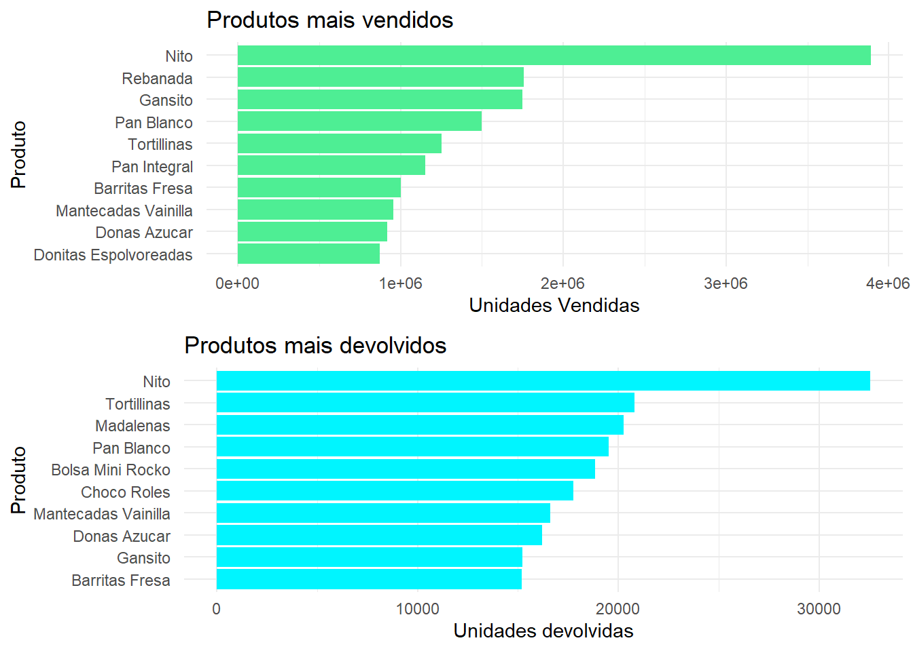
Com esses gráficos conseguimos identificar claramente quais são os produtos mais vendidos e quais os mais devolvidos.
Podemos ver uma discrepância entre os produtos mais vendidos aos locais de venda e os produtos mais devolvidos
3.3 Top 10 produtos com maior demanda real
product_demand <- data %>% select(NombreProducto,Demanda_uni_equil) %>% group_by(NombreProducto) %>%
summarise(units_demand = sum(Demanda_uni_equil)) %>% arrange(desc(units_demand))
product_demand <- product_demand[1:10,]
plot_3 = ggplot(product_demand, aes(x = reorder(NombreProducto, units_demand),units_demand))+
geom_bar(stat = "identity", fill = "grey82")+
coord_flip()+
theme_minimal()+
labs(title = "Produtos com maior demanda",
y = "Demanda",
x = "Produto")
gridExtra::grid.arrange(plot_3,plot_1)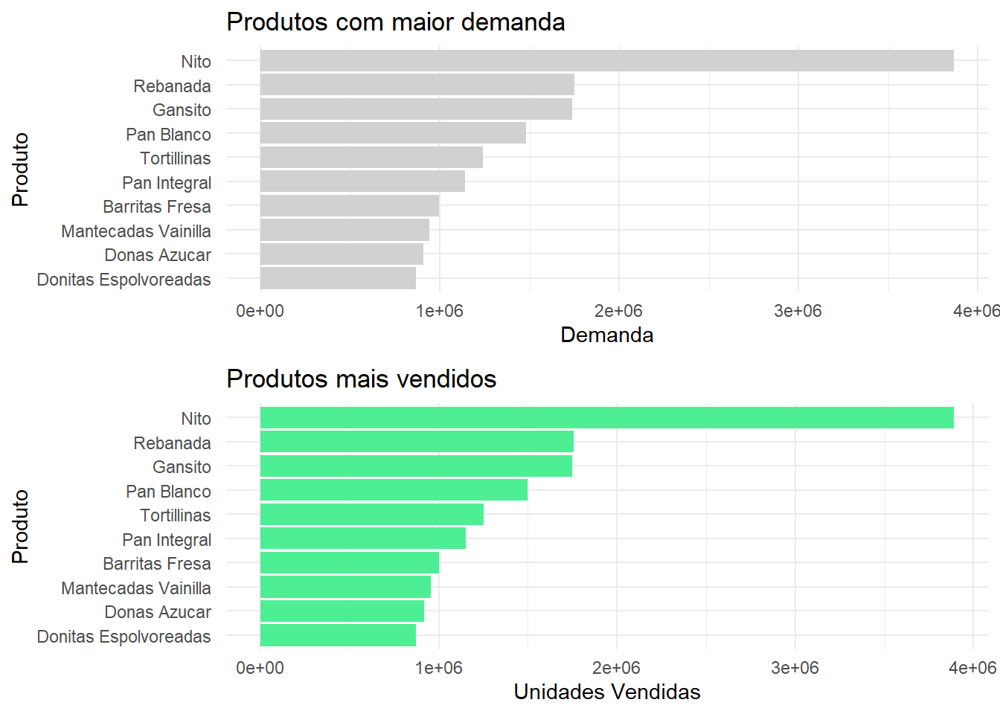
São os mesmos 10 produtos mais vendidoos, com valores bem próximos
3.4 Relação entre devolução e peso do produto
product_dev2 <- data %>% select(NombreProducto,Dev_uni_proxima, Weight) %>% group_by(NombreProducto) %>%
mutate(units_back = sum(Dev_uni_proxima)) %>% distinct(NombreProducto,Weight,units_back) %>%
arrange(desc(units_back))
ggplot(product_dev2, aes(x = Weight, y = units_back))+
geom_point(colour = "skyblue4", alpha = 0.6, size = 4)+
theme_minimal()+
labs(title = "Análise de correlação - Peso do produto x Unidades Devolvidas",
y = "Unidades devolvidas",
x = "peso")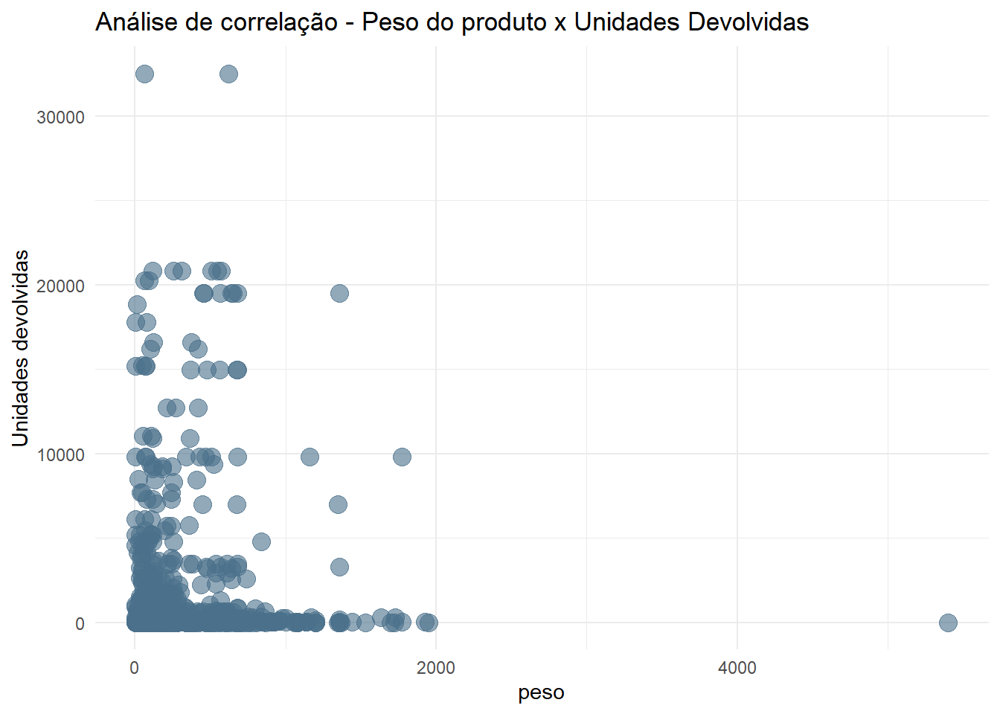
Não parece haver relação do peso com unidades devolvidas
3.5 Quantidade de devoluções por cidade e por Estado
3.6 Top 10 cidades/Estados com mais vendas e mais devoluções
town_sell <- data %>% select(Town_name,Venta_uni_hoy) %>% group_by(Town_name) %>%
summarise(units_sold = sum(Venta_uni_hoy)) %>% arrange(desc(units_sold))
town_sell <- town_sell[1:10,]
Town_dev <- data %>% select(Town_name,Dev_uni_proxima) %>% group_by(Town_name) %>%
summarise(units_back = sum(Dev_uni_proxima)) %>% arrange(desc(units_back))
Town_dev <- Town_dev[1:10,]
plot_4 = ggplot(town_sell, aes(x = reorder(Town_name, units_sold),units_sold))+
geom_bar(stat = "identity", fill = "royalblue4")+
coord_flip()+
theme_minimal()+
labs(title = "Cidades: maior venda",
y = "Unidades Vendidas",
x = "Cidade")
plot_5 = ggplot(Town_dev, aes(x = reorder(Town_name, units_back),units_back))+
geom_bar(stat = "identity", fill = "royalblue1")+
coord_flip()+
theme_minimal()+
labs(title = "maior devolução",
y = "Unidades devolvidas",
x = "Cidade")
state_sell <- data %>% select(State,Venta_uni_hoy) %>% group_by(State) %>%
summarise(units_sold = sum(Venta_uni_hoy)) %>% arrange(desc(units_sold))
state_sell <- state_sell[1:10,]
state_dev <- data %>% select(State,Dev_uni_proxima) %>% group_by(State) %>%
summarise(units_back = sum(Dev_uni_proxima)) %>% arrange(desc(units_back))
state_dev <- state_dev[1:10,]
plot_6 = ggplot(state_sell, aes(x = reorder(State, units_sold),units_sold))+
geom_bar(stat = "identity", fill = "red4")+
coord_flip()+
theme_minimal()+
labs(title = "Estados: maior venda",
y = "Unidades Vendidas",
x = "Estado")
plot_7 = ggplot(state_dev, aes(x = reorder(State, units_back),units_back))+
geom_bar(stat = "identity", fill = "red1")+
coord_flip()+
theme_minimal()+
labs(title = "maior devolução",
y = "Unidades devolvidas",
x = "Estado")
gridExtra::grid.arrange(plot_4,plot_5,plot_6,plot_7)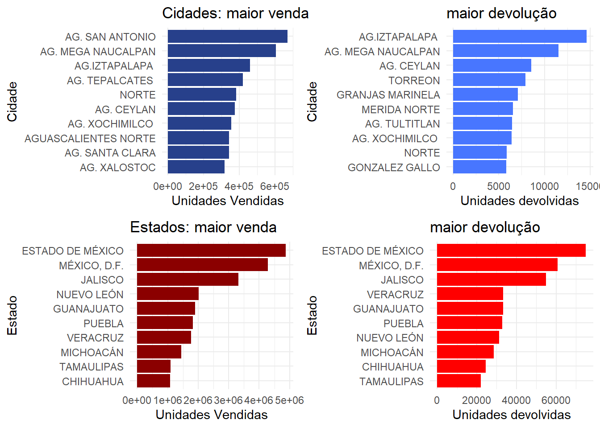
3.7 Preço do produto x devolução
product_dev3 <- data %>% select(NombreProducto,Dev_uni_proxima, Dev_proxima) %>% filter(Dev_uni_proxima>0) %>%
group_by(NombreProducto) %>% mutate(dev_uni_product =mean(Dev_uni_proxima),price_product = mean(Dev_proxima/Dev_uni_proxima)) %>%
distinct(NombreProducto,dev_uni_product,price_product)
ggplot(product_dev3, aes(x = dev_uni_product, y = price_product))+
geom_point(colour = "skyblue4", alpha = 0.6, size = 4)+
theme_minimal()+
labs(title = "Análise de correlação - Preço do produto x Unidades Devolvidas",
y = "valor de um produto devolvido",
x = "unidades devolvidas")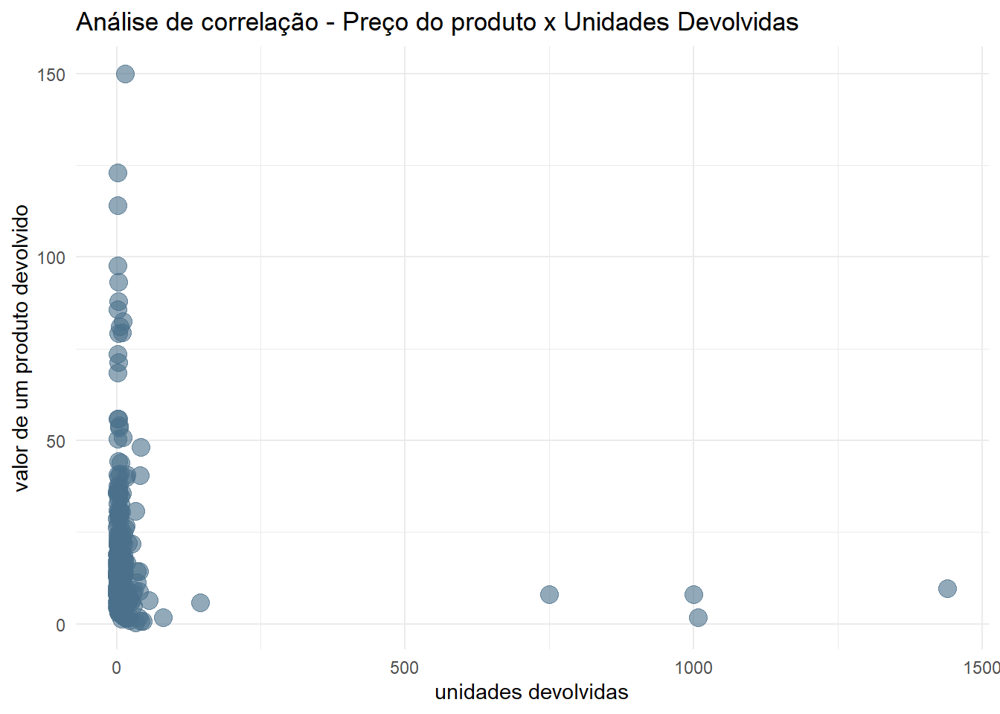
Podemos verificar que não há correlação entre o preço de um produto e a quantidade de devoluções deste
3.8 Verificando os produtos mais devolvidos e os mais caros
dev_prod = product_dev3 %>% arrange(desc(dev_uni_product))
dev_prod = dev_prod[1:15,]
price_prod = product_dev3 %>% arrange(desc(price_product))
price_prod = price_prod[1:15,]
plot_8 = ggplot(dev_prod, aes(x = reorder(NombreProducto, dev_uni_product),dev_uni_product))+
geom_bar(stat = "identity", fill = "seagreen2")+
coord_flip()+
theme_minimal()+
labs(title = "Produtos com maior média de devoluções",
y = "Média de devoluções",
x = "Produto")
plot_9 = ggplot(price_prod, aes(x = reorder(NombreProducto, price_product),price_product))+
geom_bar(stat = "identity", fill = "turquoise1")+
coord_flip()+
theme_minimal()+
labs(title = "Produtos mais caros",
y = "Preço",
x = "Produto")
gridExtra::grid.arrange(plot_8,plot_9)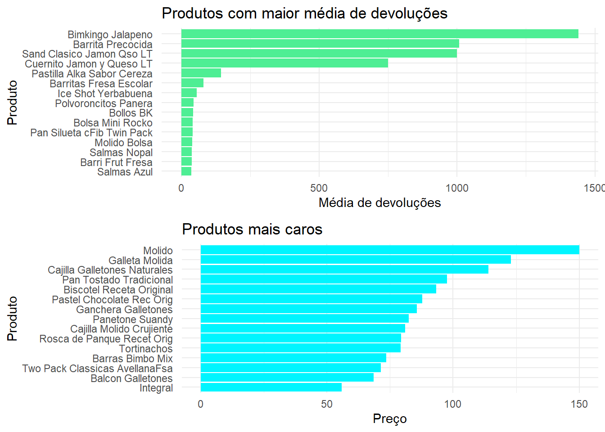
4 Machine learning: Arrumando os dados e construindo modelo usando o Xboost
4.1 Análise de outliers
summary(data$Venta_uni_hoy)## Min. 1st Qu. Median Mean 3rd Qu. Max.
## 0.000 2.000 3.000 7.307 7.000 4936.000summary(data$Venta_hoy)## Min. 1st Qu. Median Mean 3rd Qu. Max.
## 0.00 16.76 30.00 68.55 56.10 303851.52summary(data$Dev_uni_proxima)## Min. 1st Qu. Median Mean 3rd Qu. Max.
## 0.0000 0.0000 0.0000 0.1252 0.0000 1708.0000summary(data$Dev_proxima)## Min. 1st Qu. Median Mean 3rd Qu. Max.
## 0.00 0.00 0.00 1.24 0.00 40093.204.1.1 Identificando outlier - percentil:99%
out_venta = quantile(data$Venta_uni_hoy, 0.99)
out_venta## 99%
## 65out_venta_peso = quantile(data$Venta_hoy, 0.99)
out_venta_peso ## 99%
## 650.72out_dev = quantile(data$Dev_uni_proxima, 0.99)
out_dev## 99%
## 3out_dev_peso = quantile(data$Dev_proxima, 0.99)
out_dev_peso## 99%
## 25.144.1.2 Removendo os outliers
data = subset(data, subset = data$Venta_uni_hoy <= out_venta &
data$Venta_hoy <= out_venta_peso &
data$Dev_uni_proxima<= out_dev &
data$Dev_proxima <=out_dev_peso )Retirarei as variáveis Venta_uni_hoy, Venta_hoy, Dev_uni_proxima e Dev_proxima, pois não aparecem nos dados de teste, por serem dados preditores
Também retirarei as variáveis representadas por characteres(State, Town_name e NombreProducto) . Podemos fazer isso pois já fizemos o encoder delas anteriormente.
data_ml <- subset(data, select=-c(Venta_uni_hoy,Venta_hoy,Dev_uni_proxima,Dev_proxima,State,NombreProducto, Town_name))4.1.2.0.1 Retiraremos os valores NA presentes nas linhas cuja semana é 3. Podemos voltar com essas linhas caso as variáveis que possuam os valores NA sejam retiradas do modelo
data_ml2 <- data_ml %>% na.omit()4.2 Feature selection
Para determinar as variáveis que entrarão no modelo, usaremos análise de correlação e ramdom forest.
4.2.1 Analisando a correlação entre variáveis
correlations <-round(cor(data_ml2), 2)corrplot(correlations, type = "upper", order = "hclust",tl.col = "black", tl.srt = 45)
Como previsto, as variáveis que possuem média e mediana de um mesmo fator possuem alta correlação. Outra forte correlação ficou entre a variável Agencia_per_state e Town_ID. Poderemos considerar remover uma dessas variáveis do modelo
4.2.2 Analisando a importância de variáveis para o modelo com rmadom forest
Não executarei este comando aqui por limitações de hardware, porém o código foi executado e o resultado descrevo abaixo
model <- randomForest(Demanda_uni_equil ~ ., data = data_ml2, ntree = 40, nodesize = 5, importance=T)
varImpPlot(model)
Usando o método ‘%inc MSE’, a variável ‘last_week_mean’ possuiu pouca importância no modelo, então tiraremos do nosso dataset.
Das variáveis que apresentam valores de média e mediana, as médias performaram melhor no modelo, então tiraremos as medianas.
Testarei o modelo com e sem a variável ‘Town_ID’, por us agrnade correlação com a variável ‘Agencia_per_state’.
Interessante perceber a grande importância de variáveis criadas como ‘Product_lw_mean’ e ‘Weight’.
data_ml3 <- subset(data_ml2, select = -c(State_demand_median,Town_demand_median,Product_lw_median, last_week_mean,Town_ID ))4.3 Normalizando os dados preditores
4.3.0.1 Criando um função de normalização
normalizar <- function(x) {
return ((x - min(x)) / (max(x) - min(x)))
}
data_ml4 <- as.data.frame(normalizar(data_ml3))
data_ml4$Demanda_uni_equil <- data_ml3$Demanda_uni_equil
data_ml4$Semana <- data_ml3$Semana4.4 Dividindo os dados em treino e teste
usaremos as semanas 4 : 8 para dados de treino e a semana 9 para dados de teste
data_train = subset(data_ml4, subset = Semana != 9)
data_test = subset(data_ml4, subset = Semana == 9)
data_train$Semana = NULL
data_test$Semana = NULL4.5 Construção do modelo usando XGboost
4.5.1 Função para descobrir os melhores parâmetros para o modelo
model_parameters <- function(data, label, maxDepth = 13, nEta = 0.2, nRounds = 86, subsample = 0.85,
colsample = 0.7, statusPrint = F) {
#criação de um data frame vazio onde colocaremos os resultados
features = data.frame()
count = 0
#função para calcular o total de modelos a serem criados
total_models <- length(maxDepth) * length(nEta) * length(nRounds) * length(subsample) * length(colsample)
#convertendo os dados par uma matrix densa
dTrain <- xgb.DMatrix(data = data, label = label)
for(a in maxDepth) {
for(b in nEta) {
for(c in nRounds) {
for(d in subsample) {
for(e in colsample) {
#criação do modelo
model <- xgb.train(params = list(objective = "reg:linear", booster= "gbtree",
eta = b, max_depth = a, subsample = d,
colsample_bytree = e),
data = dTrain, feval = rmsle, nrounds = c,
verbose = F, maximize = F, nthread =15)
#salvando as previsões
pred <- ifelse(predict(model, data) <0,0,predict(model, data)) #não podemos prever demanda inferior a 0
#armazenando os parâmetros e o score do modelo
features <- rbind(features, data.frame(maxDepth = a,
eta = b,
nRounds = c,
d = d,
e = e,
rmsle = rmsle(label, pred)))
count = count + 1
#imprimindo a porcetagem de progresso do treinamento e o melhor score alcançado
print(paste(100 * count / total_models, '%, melhor resultado: ', min(features$rmsle)))
# Salvando dataframe com os resultados gerados em um arquivo .csv
write.csv(x = features, file = "features.csv",row.names = FALSE)
}}}}
features}}4.5.2 Executando a função criada
features <- model_parameters(
data = as.matrix(data_train %>% select(- Demanda_uni_equil)),
label = data_train$Demanda_uni_equil,
maxDepth = 12:14,
nEta = 0.2,
nRounds = 85:87,
subsample = 0.85,
colsample = 0.7,
statusPrint = F
)4.5.2.1 Visualizando dataframe com os resultados obtidos no treinamento.
featuresXGboost <- fread("features.csv")
featuresXGboost## maxDepth eta nRounds d e rmsle
## 1: 12 0.2 85 0.85 0.7 0.5555227
## 2: 12 0.2 86 0.85 0.7 0.5552124
## 3: 12 0.2 87 0.85 0.7 0.5535915
## 4: 13 0.2 85 0.85 0.7 0.5466205
## 5: 13 0.2 86 0.85 0.7 0.5444321
## 6: 13 0.2 87 0.85 0.7 0.5462198
## 7: 14 0.2 85 0.85 0.7 0.5326294
## 8: 14 0.2 86 0.85 0.7 0.5329499
## 9: 14 0.2 87 0.85 0.7 0.5347218Podemos ver que o melhor resultadeo está na linha 7
bestXGboost <- featuresXGboost[7,]
bestXGboost## maxDepth eta nRounds d e rmsle
## 1: 14 0.2 85 0.85 0.7 0.53262944.6 Criando modelo definitivo
dTrain <- xgb.DMatrix(data = as.matrix(data_train %>% select(- Demanda_uni_equil)),
label = data_train$Demanda_uni_equil) #dados de treino em forma de matrix densa
model_final <- xgb.train(params = list(objective = "reg:linear", booster= "gbtree",
eta = bestXGboost$eta, max_depth = bestXGboost$maxDepth, subsample = bestXGboost$d,
colsample_bytree = bestXGboost$e),
data = dTrain, feval = rmsle, bestXGboost$nRounds,
verbose = T, maximize = F, nthread =15)4.7 Fazendo as previsões e descobrindo o score do modelo
pred_final <- ifelse(
predict(model_final, as.matrix(data_test %>% select(- Demanda_uni_equil))) <0,0,
predict(model_final, as.matrix(data_test %>% select(- Demanda_uni_equil))))
rmsle(preds = pred_final, actuals = data_test$Demanda_uni_equil)## [1] 0.57890454.7.1 Obtemos, assim, um score RMSLE de 0.5789045.
OBS: Este score foi obtido utilizando uma pequena amostra dos dados(5 MI, de um total de mais de 74 Mi. Caso todo o dataset disponibilizado fosse executado, teríamos um score menor (melhor).